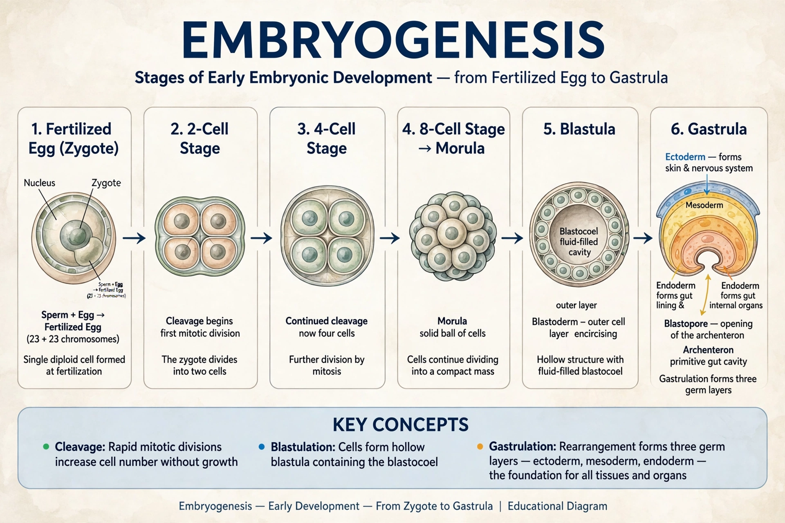

Embryogenesis is the process by which an embryo forms and develops from a fertilised egg (zygote). In animals it encompasses cleavage, gastrulation and organogenesis, transforming a single cell into a multicellular organism with differentiated tissues and organs.

| Embryogenesis | |
|---|---|
| Stages | Cleavage, blastulation, gastrulation, neurulation, organogenesis |
| Precursor | Zygote |
| Gives rise to | Fetus / larva |
After fertilisation, the zygote undergoes rapid mitotic divisions (cleavage) forming a morula and then a blastula/blastocyst. In gastrulation, cells migrate to form the three germ layers — ectoderm, mesoderm and endoderm — which give rise respectively to skin and nervous system; muscle, bone and blood; and gut and associated organs. Neurulation forms the neural tube, followed by organogenesis guided by signalling pathways such as Wnt, Hedgehog, BMP and retinoic acid, and by Hox gene patterning.
Plant embryogenesis establishes the shoot–root axis, cotyledons and meristems within the seed, regulated heavily by the hormone auxin.
In humans the embryonic period covers the first eight weeks after fertilisation, after which the developing organism is called a fetus. Errors during this period cause many congenital anomalies; teratogens such as alcohol and thalidomide can disrupt development.